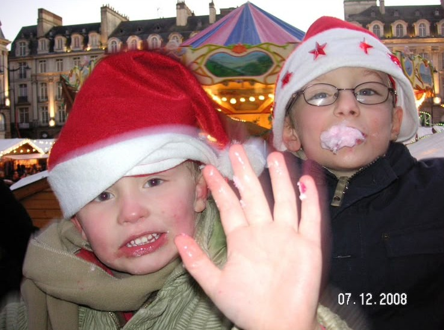

Notre Histoire
De 2008 à 2028, rien n'a vraiment changé
Depuis nos premiers pas, nous avons absolument tout partagé. Les grands jeux comme les petites bêtises, les moments d'entraide infaillible comme les embrouilles mémorables qui ne duraient jamais bien longtemps. En réalité, plus que des cousins, nous avons grandi exactement comme deux frères.
Nous lancer ensemble dans l'aventure du 4L Trophy aujourd'hui, c'est tout simplement la suite logique de notre histoire. Nous savons que cette complicité forgée au fil des années sera notre meilleur moteur pour surmonter les galères mécaniques, garder le sourire dans le désert et mener à bien cette belle mission solidaire !


Pour parler un peu plus de nous
Les deux visages du raid
Nathan, 23 ans
Sa bio arrive bientôt.
Clément, 25 ans
Clément a toujours été un peu tête en l'air étant petit. Depuis son voyage humanitaire, seul avec son sac en Asie, il est revenu plus serein, posé et réfléchi. D'un naturel empathique, il est toujours là pour les autres, même s'ils ne le méritent pas forcément.
C'est peut-être cette sagesse que je (Nathan) souhaite acquérir lors de ce raid. Le voir revenir plein d'émotions et d'anecdotes après son voyage m'a donné envie, à moi aussi, d'aider les autres.